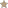
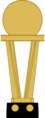
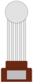
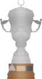
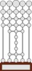
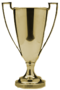

| Troféus | Competição | Títulos | Temporadas |
|---|---|---|---|
| Copa do Mundo de Clubes da FIFA | 1 | 2005 | |
|  | Copa Intercontinental | 2 | 1992 e 1993 |
| Troféus | Competição | Títulos | Temporadas |
|---|---|---|---|
| Copa Libertadores da América | 3 | 1992, 1993 e 2005 | |
|  | Copa Conmebol | 1 | 1994 |
| Copa Sul-Americana | 1 | 2012 | |
|  | Supercopa Libertadores | 1 | 1993 |
| Recopa Sul-Americana | 2 | 1993 e 1994 | |
| Copa Master da Conmebol | 1 | 1996 |
| Troféus | Competição | Títulos | Temporadas |
|---|---|---|---|
|  | Campeonato Brasileiro | 6 | 1977, 1986, 1991, 2006, 2007 e 2008 |
| Troféus | Competição | Títulos | Temporadas |
|---|---|---|---|
| Torneio Rio-São Paulo | 1 | 2001 | |
|  | Taça dos Campeões Rio-São Paulo | 11 | 1931, 1943, 1945, 1946, 1948, 1953, 1957, 1975, 1980, 1985 e 1987 |
| Troféus | Competição | Títulos | Temporadas |
|---|---|---|---|
| Campeonato Paulista | 22 | 1931, 1943, 1945, 1946, 1948, 1949, 1953, 1957, 1970, 1971, 1975, 1980, 1981, 1985, 1987, 1989, 1991, 1992, 1998, 2000, 2005 e 2021 | |
| Supercampeonato Paulista | 1 | 2002 |
| Escudo | Conquistas | Títulos | Categorias |
|---|---|---|---|
|
Títulos Oficiais | 53 | 3 Mundiais, 9 Continentais, 6 Nacionais, 12 Interestaduais, 23 Estaduais |